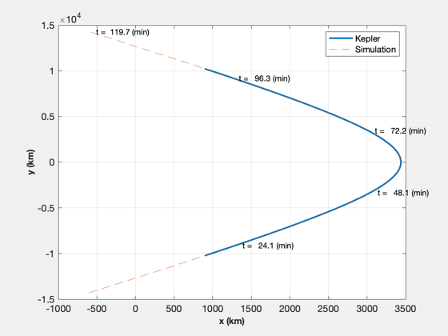
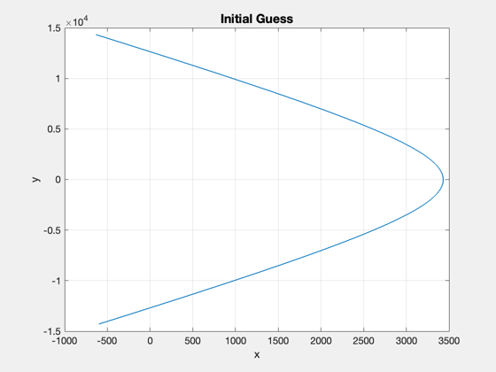
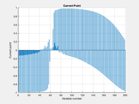
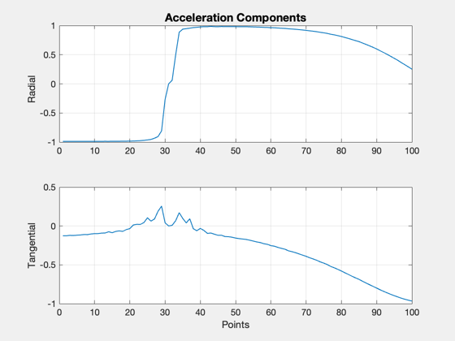
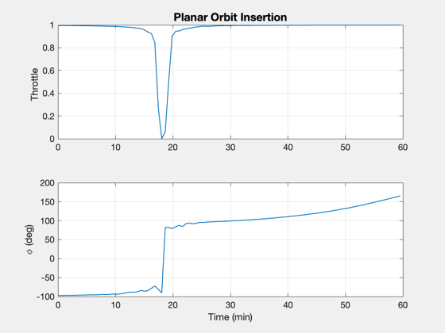
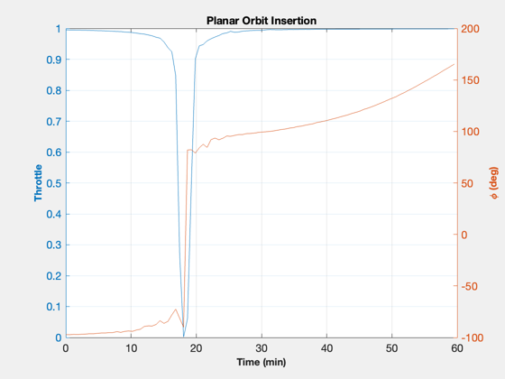
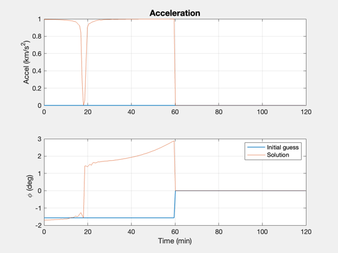
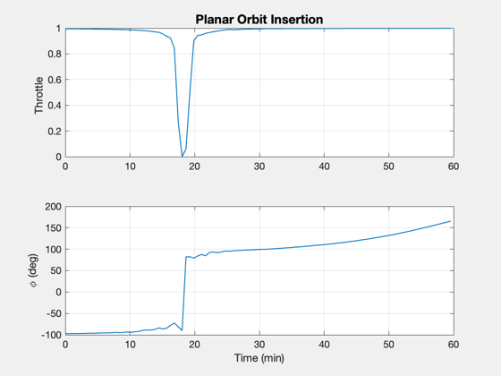
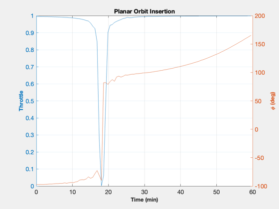
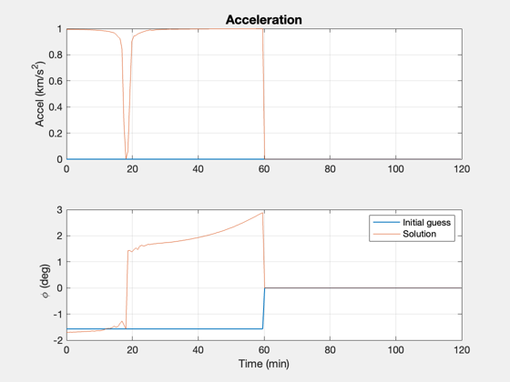

Simulate an optimal approach and orbit insertion at Mercury (fmincon)
Treat the problem as planar. Models a fixed mass. fmincon is used to find the optimal trajectory. This optimization is on the slow side and may take several hundred iterations.
Parameter space: 1. how long a time is allocated for the insertion burn (fTime) 2. the number of points along the trajectory 3. number of optimization iterations, or tolerances
Example solutions: 3500 kg / 40 or 20 N / fTime = 3 - coast time in trajectory 3000 kg / 15 N / 3 Note: lower thrust may require less mass, more points
The cost, f(x), is the total acceleration required for the maneuver. The constraints, or Feasibility, are that the acceleration magnitude is less than the maximum and that the final state is achieved at the endpoint.
Example output: First-order Norm of Iter F-count f(x) Feasibility optimality step 271 56026 8.140240e+01 5.301e-12 8.410e-01 3.252e-03
See also ApproachCost2DMag, ApproachConst2DIneq, Simulate2DApproach
Contents
%-------------------------------------------------------------------------- % Copyright (c) 2016 Princeton Satellite Systems, Inc. % All rights reserved. %-------------------------------------------------------------------------- % Since 2017.1 %-------------------------------------------------------------------------- Watermark([1 1 1]); % for plot inversion if( ~HasOptimizationToolbox ) error('You need the MATLAB optimizaton toolbox to run this script.'); end
Problem parameters
Optimization parameters
maxIter = 500; fTime = 5; % factor times the impulse time for executing burn % Spacecraft parameters mass = 2800; % fixed mass (kg) thrust = 10; % fixed thrust (N) % Target orbit parameters h = 1000; % apogee hC = 5000; % perigee
Setup
Constants
rE = Constant('equatorial radius mercury'); mu = Constant('mu mercury'); aMax = thrust*0.001/mass; % km/s2 % Calculate target orbit [sma,ecc] = RPRA2AE(rE+hC,rE+h); vEll = VOrbit(rE+h,sma,mu); rP = rE + h; % r of passage % Encounter velocity (incoming trajectory) vEsc = VEscape( rP, mu ); vEnc = 1.06*vEsc; vInf = sqrt(vEnc.^2 - vEsc); % v-infinity % Change from encounter velocity to apogee - instantaneous burn dV = vEnc-vEll; % Approx time to do delta-V at our fixed thrust level impT = dV*mass*1000/thrust; dVTime = fTime*impT; % Generate incoming trajectory orbital elements (hyperbola) via Kepler smaP = -mu/vInf^2; eccP = 1 - rP/smaP; f = 0.76*acos(-1/eccP); m = Nu2M(eccP,f); m = linspace(-m,m); r = zeros(3,100); for j = 1:length(m) el = [smaP 0 0 0 eccP m(j)]; r(:,j) = El2RV( el, [], mu ); end % Plot the flyby (if no delta-V is applied) NewFig('Mercury flyby') plot(r(1,:),r(2,:),'linewidth',2); hold on grid on XLabelS('x (km)'); YLabelS('y (km)'); % Compute the true anomaly to reach target anomaly in dVTime time fTarget = 0.0; f0 = TrueAnomalyStartHyperbola(smaP,eccP,dVTime,fTarget,mu); nPts = 200; % 100 pts t = linspace(0,TimeOfFlightHyperbola(smaP,eccP,-f0,f0,mu),nPts); %nPts = length(t); m0 = Nu2M( eccP,f0 ); [r, v] = El2RV( [smaP 0 0 0 eccP m0], [], mu ); % Convert velocity to planar coordinates (u,v) uR = Unit(r); uT = Cross([0;0;1],uR); u = Dot(uR,v); v = Dot(uT,v); % Initial condition x0 = [Mag(r);u;v;atan2(r(2),r(1))]; % Verify the simulation for zero acceleration acc = zeros(1,length(t)); % acceleration phi = zeros(1,length(t)); % thrust angle d.mu = mu; d.aMax = aMax; xZ = Simulate2DApproach( t, x0, phi, acc, d ); plot(xZ(1,:),xZ(2,:),'--'); m = nPts/5; j = [1:m:nPts nPts]; [tS,~,tU] = TimeLabl(t); for k = 2:length(j) i = j(k); s = sprintf(' t = %6.1f (%s)',tS(i),tU); text(xZ(1,i),xZ(2,i),s); end legend('Kepler','Simulation') drawnow
Set up the powered orbit insertion optimization
The goal is to achieve the insertion orbit at the end of the burn. The cost is the total acceleration.
% Target condition: elliptical orbital velocity at rP xF = [rP;0;vEll]; % Step at which you should be at xF nF = length(t)/2; opts = optimset( 'Display','iter-detailed',... 'maxiter',maxIter,... 'algorithm','interior-point',... 'TolFun',1e-2,... 'TolCon',0.1,... 'TolX',1e-4,... 'PlotFcns',@optimplotx,... 'MaxFunEvals',300000); costFun = @(u) ApproachCost2DMag(u); constFun = @(u) ApproachConst2DIneq(u,d,t(1:nF),x0,xF); % Lower and upper bounds oN = ones(1,nF); lB = [-1*oN; -1*oN]; uB = [oN; oN]; % Initial solution: start with negative radial thrust to avoid a swingby of % Pluto, which confuses the simulation. acc0 = oN; u0 = [-oN;0*oN]; % [radial;tangential] %Plot2D(1:nF,u0,'Points',{'Radial','Tangential'},'Initial Acceleration') phi0 = atan2(u0(1,:),u0(2,:)); traj0 = Simulate2DApproach( t, x0, [phi0 0*oN], [acc0 0*oN], d ); Plot2D(traj0(1,:),traj0(2,:),'x','y','Initial Guess') drawnow
Run fmincon to calculate the optimal decision variables
tic [u,fval,eflag,output] = fmincon(costFun,u0,[],[],[],[],lB,uB,constFun,opts); toc u(abs(u)<1e-3) = 0; Plot2D(1:nF,u,'Points',{'Radial','Tangential'},'Acceleration Components')
Initial point X0 is not between bounds LB and UB;
FMINCON shifted X0 to strictly satisfy the bounds.
First-order Norm of
Iter F-count f(x) Feasibility optimality step
0 201 1.000000e+01 6.422e-01 7.861e-01
1 405 9.043755e+00 6.420e-01 1.338e+00 6.443e-01
2 612 8.402002e+00 6.420e-01 6.462e-01 3.216e-01
3 822 8.376742e+00 6.420e-01 6.409e-01 1.758e-02
4 1026 8.397724e+00 6.420e-01 7.155e-01 3.509e-02
5 1231 8.443275e+00 6.420e-01 6.190e-01 7.032e-02
6 1434 8.637405e+00 6.419e-01 1.258e+00 6.959e-02
7 1640 8.823753e+00 6.419e-01 7.514e-01 6.983e-02
8 1843 9.119123e+00 6.419e-01 1.322e+00 6.879e-02
9 2048 9.618539e+00 6.419e-01 8.390e-01 1.387e-01
10 2252 9.788933e+00 6.419e-01 8.184e-01 3.379e-02
11 2457 1.001508e+01 6.419e-01 7.627e-01 6.862e-02
12 2660 1.040069e+01 6.419e-01 1.353e+00 6.734e-02
13 2865 1.103244e+01 6.418e-01 8.622e-01 1.361e-01
14 3069 1.123681e+01 6.418e-01 8.627e-01 3.336e-02
15 3274 1.142919e+01 6.418e-01 8.192e-01 6.747e-02
16 3481 1.204178e+01 6.418e-01 8.834e-01 1.177e-01
17 3685 1.240909e+01 6.418e-01 1.006e+00 5.803e-02
18 3890 1.287229e+01 6.418e-01 8.596e-01 1.157e-01
19 4094 1.323943e+01 6.418e-01 1.114e+00 5.769e-02
20 4299 1.379764e+01 6.417e-01 8.411e-01 1.145e-01
21 4503 1.416812e+01 6.417e-01 1.179e+00 5.728e-02
22 4708 1.467476e+01 6.417e-01 9.031e-01 1.128e-01
23 4912 1.504336e+01 6.417e-01 9.150e-01 5.689e-02
24 5117 1.564740e+01 6.417e-01 8.292e-01 1.115e-01
25 5321 1.601291e+01 6.417e-01 8.366e-01 5.641e-02
26 5526 1.651306e+01 6.417e-01 8.846e-01 1.098e-01
27 5730 1.688199e+01 6.417e-01 1.047e+00 5.609e-02
28 5935 1.741678e+01 6.416e-01 8.867e-01 1.085e-01
29 6139 1.778189e+01 6.416e-01 1.173e+00 5.555e-02
30 6344 1.831396e+01 6.416e-01 9.066e-01 1.067e-01
First-order Norm of
Iter F-count f(x) Feasibility optimality step
31 6548 1.867429e+01 6.416e-01 9.041e-01 5.497e-02
32 6753 1.920519e+01 6.416e-01 9.223e-01 1.050e-01
33 6957 1.956313e+01 6.416e-01 1.286e+00 5.445e-02
34 7162 2.007810e+01 6.416e-01 8.624e-01 1.029e-01
35 7366 2.043402e+01 6.415e-01 1.164e+00 5.402e-02
36 7571 2.091256e+01 6.415e-01 9.147e-01 1.006e-01
37 7775 2.126893e+01 6.415e-01 1.080e+00 5.335e-02
38 7980 2.179989e+01 6.415e-01 9.310e-01 9.909e-02
39 8184 2.215605e+01 6.415e-01 9.243e-01 5.284e-02
40 8389 2.265529e+01 6.415e-01 9.621e-01 9.778e-02
41 8593 2.300519e+01 6.415e-01 9.596e-01 5.194e-02
42 8798 2.349324e+01 6.415e-01 8.692e-01 9.543e-02
43 9002 2.383791e+01 6.414e-01 8.667e-01 5.111e-02
44 9207 2.432161e+01 6.414e-01 8.987e-01 9.334e-02
45 9411 2.465824e+01 6.414e-01 8.891e-01 4.983e-02
46 9616 2.513579e+01 6.414e-01 9.724e-01 9.175e-02
47 9820 2.546590e+01 6.414e-01 9.751e-01 4.885e-02
48 10025 2.599315e+01 6.414e-01 9.326e-01 9.236e-02
49 10229 2.631797e+01 6.414e-01 9.321e-01 4.842e-02
50 10434 2.677973e+01 6.414e-01 9.624e-01 8.960e-02
51 10638 2.709943e+01 6.414e-01 9.172e-01 4.747e-02
52 10843 2.757409e+01 6.413e-01 9.858e-01 8.779e-02
53 11047 2.788385e+01 6.413e-01 9.885e-01 4.661e-02
54 11252 2.838024e+01 6.413e-01 8.982e-01 8.682e-02
55 11456 2.868241e+01 6.413e-01 9.100e-01 4.585e-02
56 11661 2.913480e+01 6.413e-01 8.351e-01 8.496e-02
57 11865 2.942843e+01 6.413e-01 8.059e-01 4.487e-02
58 12070 2.989395e+01 6.413e-01 9.358e-01 8.318e-02
59 12274 3.018425e+01 6.413e-01 9.387e-01 4.440e-02
60 12479 3.063533e+01 6.413e-01 9.627e-01 8.215e-02
First-order Norm of
Iter F-count f(x) Feasibility optimality step
61 12683 3.091920e+01 6.413e-01 9.612e-01 4.367e-02
62 12888 3.137976e+01 6.412e-01 8.761e-01 8.072e-02
63 13092 3.166259e+01 6.412e-01 8.578e-01 4.323e-02
64 13297 3.211361e+01 6.412e-01 7.504e-01 7.910e-02
65 13501 3.239311e+01 6.412e-01 8.030e-01 4.312e-02
66 13706 3.283803e+01 6.412e-01 9.205e-01 7.903e-02
67 13910 3.311292e+01 6.412e-01 9.358e-01 4.227e-02
68 14115 3.353774e+01 6.412e-01 7.954e-01 7.600e-02
69 14319 3.380593e+01 6.412e-01 7.925e-01 4.211e-02
70 14524 3.423749e+01 6.412e-01 8.222e-01 7.458e-02
71 14728 3.450044e+01 6.412e-01 9.346e-01 4.130e-02
72 14933 3.493212e+01 6.412e-01 8.023e-01 7.170e-02
73 15137 3.519185e+01 6.412e-01 9.790e-01 4.020e-02
74 15342 3.562285e+01 6.411e-01 8.599e-01 7.288e-02
75 15546 3.588150e+01 6.411e-01 1.016e+00 3.905e-02
76 15751 3.629516e+01 6.411e-01 8.613e-01 7.283e-02
77 15954 3.682000e+01 6.411e-01 1.138e+00 7.792e-02
78 16159 3.774797e+01 6.411e-01 9.277e-01 1.328e-01
79 16365 3.861166e+01 6.411e-01 9.065e-01 1.397e-01
80 16569 3.886021e+01 6.411e-01 9.152e-01 3.629e-02
81 16774 3.921273e+01 6.411e-01 6.871e-01 7.472e-02
82 16978 3.947502e+01 6.411e-01 6.870e-01 3.825e-02
83 17183 3.987368e+01 6.410e-01 9.339e-01 7.310e-02
84 17386 4.043641e+01 6.410e-01 1.152e+00 8.086e-02
85 17591 4.135561e+01 6.410e-01 8.642e-01 1.311e-01
86 17795 4.162930e+01 6.410e-01 9.880e-01 3.963e-02
87 18000 4.198808e+01 6.410e-01 8.261e-01 6.854e-02
88 18204 4.227058e+01 6.410e-01 9.180e-01 4.115e-02
89 18409 4.271332e+01 6.410e-01 7.117e-01 7.110e-02
90 18613 4.299437e+01 6.410e-01 1.410e+00 4.203e-02
First-order Norm of
Iter F-count f(x) Feasibility optimality step
91 18818 4.341614e+01 6.410e-01 7.628e-01 6.617e-02
92 19022 4.369126e+01 6.410e-01 8.826e-01 4.119e-02
93 19227 4.411142e+01 6.410e-01 1.003e+00 6.402e-02
94 19431 4.438546e+01 6.410e-01 1.014e+00 4.101e-02
95 19636 4.479590e+01 6.409e-01 8.971e-01 6.295e-02
96 19840 4.505179e+01 6.409e-01 1.068e+00 3.918e-02
97 20045 4.549820e+01 6.409e-01 7.506e-01 6.365e-02
98 20249 4.575052e+01 6.409e-01 1.091e+00 3.731e-02
99 20454 4.615583e+01 6.409e-01 7.972e-01 5.958e-02
100 20658 4.639943e+01 6.409e-01 8.352e-01 3.668e-02
101 20863 4.682458e+01 6.409e-01 8.503e-01 6.384e-02
102 21067 4.706735e+01 6.409e-01 8.444e-01 3.743e-02
103 21272 4.749115e+01 6.409e-01 7.062e-01 6.452e-02
104 21476 4.772847e+01 6.409e-01 7.258e-01 3.700e-02
105 21681 4.814669e+01 6.409e-01 7.213e-01 6.397e-02
106 21885 4.838568e+01 6.409e-01 8.653e-01 3.750e-02
107 22090 4.880914e+01 6.409e-01 7.564e-01 6.360e-02
108 22294 4.903441e+01 6.409e-01 7.590e-01 3.677e-02
109 22499 4.943559e+01 6.409e-01 7.690e-01 6.400e-02
110 22703 4.965539e+01 6.409e-01 7.551e-01 3.549e-02
111 22908 5.008556e+01 6.409e-01 8.436e-01 6.546e-02
112 23111 5.052811e+01 6.409e-01 8.697e-01 6.397e-02
113 23317 5.090953e+01 6.408e-01 8.371e-01 6.211e-02
114 23521 5.114329e+01 6.408e-01 8.797e-01 3.394e-02
115 23726 5.156961e+01 6.408e-01 7.884e-01 6.613e-02
116 23930 5.179781e+01 6.408e-01 8.148e-01 3.379e-02
117 24135 5.217537e+01 6.408e-01 7.081e-01 6.245e-02
118 24339 5.240495e+01 6.408e-01 7.100e-01 3.510e-02
119 24544 5.277925e+01 6.408e-01 7.434e-01 6.961e-02
120 24748 5.301038e+01 6.408e-01 7.435e-01 3.441e-02
First-order Norm of
Iter F-count f(x) Feasibility optimality step
121 24953 5.336662e+01 6.408e-01 7.067e-01 6.800e-02
122 25156 5.379414e+01 6.408e-01 7.057e-01 6.391e-02
123 25362 5.416762e+01 6.408e-01 7.407e-01 7.130e-02
124 25566 5.438951e+01 6.408e-01 1.260e+00 3.300e-02
125 25771 5.475695e+01 6.408e-01 8.423e-01 6.850e-02
126 25975 5.497213e+01 6.408e-01 8.956e-01 3.220e-02
127 26180 5.534383e+01 6.408e-01 7.706e-01 6.996e-02
128 26384 5.555244e+01 6.408e-01 7.672e-01 3.151e-02
129 26589 5.592047e+01 6.408e-01 7.636e-01 6.895e-02
130 26793 5.613013e+01 6.408e-01 7.626e-01 3.298e-02
131 26998 5.648405e+01 6.408e-01 8.320e-01 6.874e-02
132 27202 5.668997e+01 6.408e-01 7.607e-01 3.260e-02
133 27407 5.705318e+01 6.408e-01 8.361e-01 6.937e-02
134 27611 5.726242e+01 6.407e-01 8.672e-01 3.374e-02
135 27816 5.761695e+01 6.407e-01 8.502e-01 6.765e-02
136 28020 5.781909e+01 6.407e-01 8.068e-01 3.315e-02
137 28225 5.814405e+01 6.407e-01 7.408e-01 6.622e-02
138 28429 5.832576e+01 6.407e-01 8.898e-01 2.836e-02
139 28634 5.866354e+01 6.407e-01 7.468e-01 6.894e-02
140 28837 5.899778e+01 6.407e-01 9.405e-01 5.261e-02
141 29043 5.931412e+01 6.407e-01 6.843e-01 6.679e-02
142 29247 5.948824e+01 6.407e-01 6.864e-01 2.787e-02
143 29452 5.981665e+01 6.407e-01 7.385e-01 6.965e-02
144 29655 6.013314e+01 6.407e-01 7.279e-01 4.902e-02
145 29861 6.045376e+01 6.407e-01 6.934e-01 6.419e-02
146 30064 6.075504e+01 6.407e-01 7.200e-01 4.789e-02
147 30270 6.107708e+01 6.407e-01 6.962e-01 6.382e-02
148 30473 6.138841e+01 6.407e-01 6.996e-01 4.854e-02
149 30679 6.170149e+01 6.407e-01 7.171e-01 6.548e-02
150 30882 6.200618e+01 6.407e-01 7.205e-01 4.753e-02
First-order Norm of
Iter F-count f(x) Feasibility optimality step
151 31088 6.230940e+01 6.407e-01 6.552e-01 6.540e-02
152 31291 6.257822e+01 6.407e-01 6.577e-01 4.333e-02
153 31497 6.288266e+01 6.407e-01 6.501e-01 6.564e-02
154 31700 6.317227e+01 6.407e-01 8.239e-01 4.820e-02
155 31906 6.345178e+01 6.407e-01 7.835e-01 6.523e-02
156 32109 6.373215e+01 6.407e-01 7.762e-01 4.542e-02
157 32315 6.396261e+01 6.406e-01 6.861e-01 6.990e-02
158 32518 6.422010e+01 6.406e-01 6.568e-01 3.872e-02
159 32724 6.447199e+01 6.406e-01 6.761e-01 6.593e-02
160 32927 6.474898e+01 6.406e-01 6.815e-01 4.362e-02
161 33133 6.501607e+01 6.406e-01 7.806e-01 6.613e-02
162 33336 6.527496e+01 6.406e-01 7.898e-01 3.982e-02
163 33542 6.552780e+01 6.406e-01 7.224e-01 6.069e-02
164 33745 6.576540e+01 6.406e-01 1.100e+00 3.778e-02
165 33951 6.600999e+01 6.406e-01 6.994e-01 5.889e-02
166 34154 6.626121e+01 6.406e-01 7.074e-01 3.989e-02
167 34360 6.649778e+01 6.406e-01 6.992e-01 5.813e-02
168 34563 6.672395e+01 6.406e-01 7.044e-01 3.606e-02
169 34769 6.695992e+01 6.406e-01 8.098e-01 5.618e-02
170 34972 6.719228e+01 6.406e-01 7.883e-01 3.873e-02
171 35178 6.742551e+01 6.406e-01 8.537e-01 5.548e-02
172 35381 6.766438e+01 6.406e-01 8.623e-01 3.980e-02
173 35587 6.789447e+01 6.406e-01 8.400e-01 5.218e-02
174 35790 6.812861e+01 6.406e-01 8.688e-01 3.911e-02
175 35996 6.835397e+01 6.406e-01 7.828e-01 5.118e-02
176 36199 6.857054e+01 6.406e-01 9.264e-01 3.505e-02
177 36405 6.880569e+01 6.406e-01 9.014e-01 5.172e-02
178 36608 6.900688e+01 6.406e-01 8.972e-01 3.605e-02
179 36814 6.923986e+01 6.406e-01 6.325e-01 5.239e-02
180 37017 6.943506e+01 6.406e-01 6.310e-01 3.248e-02
First-order Norm of
Iter F-count f(x) Feasibility optimality step
181 37223 6.967275e+01 6.406e-01 7.130e-01 5.163e-02
182 37426 6.988619e+01 6.406e-01 7.150e-01 3.873e-02
183 37632 7.012823e+01 6.406e-01 7.359e-01 5.547e-02
184 37835 7.033026e+01 6.406e-01 7.054e-01 3.546e-02
185 38041 7.056094e+01 6.406e-01 7.496e-01 5.294e-02
186 38244 7.077519e+01 6.406e-01 7.553e-01 3.877e-02
187 38450 7.099546e+01 6.405e-01 7.232e-01 5.722e-02
188 38653 7.120239e+01 6.405e-01 7.321e-01 3.719e-02
189 38859 7.141768e+01 6.405e-01 7.624e-01 5.898e-02
190 39062 7.160531e+01 6.405e-01 7.575e-01 3.336e-02
191 39268 7.184980e+01 6.405e-01 7.310e-01 5.940e-02
192 39472 7.195516e+01 6.405e-01 7.354e-01 2.210e-02
193 39677 7.219694e+01 6.405e-01 7.597e-01 5.810e-02
194 39880 7.238154e+01 6.405e-01 7.881e-01 3.320e-02
195 40086 7.263262e+01 6.405e-01 7.769e-01 5.841e-02
196 40290 7.272884e+01 6.405e-01 7.776e-01 1.891e-02
197 40495 7.297600e+01 6.405e-01 8.776e-01 5.821e-02
198 40699 7.307859e+01 6.405e-01 8.776e-01 2.214e-02
199 40904 7.331866e+01 6.405e-01 7.736e-01 5.866e-02
200 41107 7.349964e+01 6.405e-01 7.830e-01 3.482e-02
201 41313 7.373708e+01 6.405e-01 7.747e-01 6.024e-02
202 41517 7.383881e+01 6.405e-01 7.669e-01 1.859e-02
203 41722 7.406170e+01 6.405e-01 7.935e-01 6.108e-02
204 41926 7.414549e+01 6.405e-01 8.145e-01 1.767e-02
205 42131 7.436957e+01 6.405e-01 6.995e-01 6.381e-02
206 42334 7.446369e+01 6.405e-01 7.062e-01 2.061e-02
207 42539 7.469176e+01 6.405e-01 7.123e-01 6.153e-02
208 42743 7.478185e+01 6.405e-01 7.076e-01 1.869e-02
209 42948 7.500764e+01 6.405e-01 6.840e-01 5.920e-02
210 43152 7.510545e+01 6.405e-01 6.895e-01 2.185e-02
First-order Norm of
Iter F-count f(x) Feasibility optimality step
211 43357 7.532365e+01 6.405e-01 7.308e-01 6.015e-02
212 43560 7.541214e+01 6.405e-01 7.170e-01 1.835e-02
213 43765 7.562095e+01 6.405e-01 7.065e-01 5.910e-02
214 43968 7.571097e+01 6.405e-01 7.243e-01 2.010e-02
215 44173 7.591212e+01 6.405e-01 7.628e-01 5.633e-02
216 44376 7.600273e+01 6.405e-01 7.455e-01 1.954e-02
217 44581 7.621585e+01 6.405e-01 7.613e-01 5.277e-02
218 44785 7.631086e+01 6.405e-01 7.547e-01 2.081e-02
219 44990 7.651971e+01 6.405e-01 7.298e-01 5.022e-02
220 45194 7.661320e+01 6.405e-01 7.225e-01 1.992e-02
221 45399 7.683041e+01 6.405e-01 6.815e-01 5.059e-02
222 45603 7.692047e+01 6.405e-01 6.814e-01 1.886e-02
223 45808 7.713592e+01 6.405e-01 5.858e-01 5.091e-02
224 46012 7.722167e+01 6.405e-01 5.798e-01 1.839e-02
225 46217 7.744330e+01 6.405e-01 5.708e-01 5.000e-02
226 46420 7.760696e+01 6.405e-01 5.814e-01 3.516e-02
227 46626 7.783354e+01 6.405e-01 6.319e-01 5.521e-02
228 46829 7.799866e+01 6.405e-01 5.891e-01 3.375e-02
229 47035 7.821274e+01 6.405e-01 7.096e-01 5.531e-02
230 47238 7.836395e+01 6.405e-01 6.760e-01 3.095e-02
231 47444 7.859151e+01 6.405e-01 7.224e-01 6.070e-02
232 47646 7.876630e+01 6.405e-01 7.145e-01 3.376e-02
233 47852 7.897833e+01 6.405e-01 6.948e-01 5.701e-02
234 48055 7.915054e+01 6.405e-01 6.955e-01 3.268e-02
235 48261 7.935619e+01 6.405e-01 8.909e-01 6.192e-02
236 48464 7.944354e+01 6.405e-01 8.880e-01 1.668e-02
237 48669 7.964779e+01 6.405e-01 8.771e-01 5.964e-02
238 48872 7.973988e+01 6.405e-01 9.004e-01 1.852e-02
239 49077 7.992992e+01 6.405e-01 7.575e-01 6.318e-02
240 49279 8.006214e+01 6.405e-01 7.505e-01 2.536e-02
First-order Norm of
Iter F-count f(x) Feasibility optimality step
241 49485 8.025007e+01 6.405e-01 7.062e-01 6.319e-02
242 49687 8.039394e+01 6.405e-01 6.998e-01 2.819e-02
243 49893 8.056278e+01 6.405e-01 9.206e-01 6.566e-02
244 50095 8.070515e+01 6.405e-01 8.357e-01 2.802e-02
245 50301 8.086199e+01 6.405e-01 7.486e-01 6.869e-02
246 50504 8.094537e+01 6.405e-01 7.549e-01 1.725e-02
247 50709 8.108246e+01 6.405e-01 7.414e-01 6.699e-02
248 50913 8.115744e+01 6.404e-01 7.284e-01 1.548e-02
249 51118 8.130158e+01 6.404e-01 6.978e-01 6.472e-02
250 51321 8.138590e+01 6.404e-01 6.878e-01 1.836e-02
251 51526 8.154459e+01 6.404e-01 6.818e-01 5.616e-02
252 51730 8.162584e+01 6.404e-01 6.942e-01 1.758e-02
253 51935 8.177967e+01 6.404e-01 7.332e-01 5.295e-02
254 52139 8.185750e+01 6.404e-01 7.259e-01 1.653e-02
255 52344 8.199703e+01 6.404e-01 7.586e-01 4.879e-02
256 52547 8.213627e+01 6.404e-01 7.458e-01 2.888e-02
257 52753 8.226952e+01 6.404e-01 7.468e-01 4.771e-02
258 52956 8.240728e+01 6.404e-01 7.427e-01 2.868e-02
259 53162 8.255013e+01 6.404e-01 6.622e-01 5.232e-02
260 53365 8.267498e+01 6.404e-01 6.568e-01 2.567e-02
261 53571 8.283607e+01 6.404e-01 6.380e-01 4.979e-02
262 53774 8.297004e+01 6.404e-01 6.191e-01 2.731e-02
263 53980 8.313953e+01 6.404e-01 6.478e-01 5.149e-02
264 54183 8.325996e+01 6.404e-01 6.473e-01 2.508e-02
265 54389 8.342712e+01 6.404e-01 7.091e-01 5.379e-02
266 54592 8.354875e+01 6.404e-01 7.149e-01 2.437e-02
267 54798 8.371681e+01 6.404e-01 7.067e-01 5.601e-02
268 55000 8.383291e+01 6.404e-01 7.250e-01 2.301e-02
269 55206 8.400631e+01 6.404e-01 9.536e-01 5.819e-02
270 55408 8.412360e+01 6.404e-01 8.801e-01 2.305e-02
First-order Norm of
Iter F-count f(x) Feasibility optimality step
271 55614 8.430309e+01 6.404e-01 6.881e-01 5.677e-02
272 55816 8.441934e+01 6.404e-01 6.998e-01 2.550e-02
273 56022 8.461840e+01 6.404e-01 7.178e-01 5.817e-02
274 56224 8.474524e+01 6.404e-01 7.355e-01 2.528e-02
275 56430 8.494651e+01 6.404e-01 7.211e-01 5.897e-02
276 56632 8.505095e+01 6.404e-01 7.104e-01 2.322e-02
277 56838 8.524301e+01 6.404e-01 7.010e-01 6.436e-02
278 57040 8.535870e+01 6.404e-01 6.513e-01 2.644e-02
279 57246 8.556125e+01 6.404e-01 6.771e-01 6.496e-02
280 57449 8.562572e+01 6.404e-01 6.855e-01 1.410e-02
281 57654 8.581824e+01 6.404e-01 6.172e-01 6.281e-02
282 57860 8.600149e+01 6.404e-01 5.676e-01 6.440e-02
283 58064 8.604511e+01 6.404e-01 5.880e-01 1.058e-02
284 58269 8.612449e+01 6.404e-01 5.721e-01 3.226e-02
285 58471 8.620952e+01 6.404e-01 5.822e-01 2.026e-02
286 58678 8.628843e+01 6.404e-01 6.342e-01 3.400e-02
287 58880 8.638850e+01 6.404e-01 6.472e-01 2.182e-02
288 59087 8.646521e+01 6.404e-01 7.011e-01 3.522e-02
289 59290 8.654011e+01 6.404e-01 7.181e-01 1.867e-02
290 59496 8.661565e+01 6.404e-01 7.179e-01 3.494e-02
291 59698 8.674290e+01 6.404e-01 7.175e-01 3.037e-02
292 59905 8.681660e+01 6.404e-01 7.171e-01 3.415e-02
293 60108 8.689364e+01 6.404e-01 7.171e-01 1.955e-02
294 60314 8.696156e+01 6.404e-01 6.515e-01 3.344e-02
295 60518 8.699715e+01 6.404e-01 6.585e-01 1.133e-02
296 60722 8.722861e+01 6.404e-01 6.071e-01 6.678e-02
297 60931 8.729313e+01 6.404e-01 6.111e-01 3.123e-02
298 61135 8.731973e+01 6.404e-01 6.272e-01 8.550e-03
299 61340 8.738326e+01 6.404e-01 6.170e-01 3.144e-02
300 61544 8.741174e+01 6.404e-01 6.253e-01 9.797e-03
First-order Norm of
Iter F-count f(x) Feasibility optimality step
301 61749 8.747668e+01 6.404e-01 5.885e-01 3.046e-02
302 61952 8.752122e+01 6.404e-01 5.968e-01 1.550e-02
303 62158 8.758952e+01 6.404e-01 6.058e-01 3.022e-02
304 62361 8.763178e+01 6.404e-01 6.068e-01 1.564e-02
305 62567 8.770351e+01 6.404e-01 5.962e-01 2.936e-02
306 62769 8.777347e+01 6.404e-01 5.976e-01 2.362e-02
307 62976 8.784477e+01 6.404e-01 5.786e-01 2.859e-02
308 63179 8.790349e+01 6.404e-01 5.799e-01 2.059e-02
309 63385 8.797491e+01 6.404e-01 5.799e-01 2.751e-02
310 63588 8.803274e+01 6.404e-01 5.882e-01 1.859e-02
311 63794 8.810722e+01 6.404e-01 5.974e-01 2.768e-02
312 63997 8.815890e+01 6.404e-01 6.213e-01 1.605e-02
313 64203 8.822520e+01 6.404e-01 6.244e-01 2.953e-02
314 64405 8.830740e+01 6.404e-01 6.124e-01 2.723e-02
315 64612 8.836930e+01 6.404e-01 6.333e-01 2.988e-02
316 64815 8.842203e+01 6.404e-01 6.206e-01 1.764e-02
317 65021 8.848347e+01 6.404e-01 6.585e-01 2.982e-02
318 65223 8.856014e+01 6.404e-01 7.002e-01 2.573e-02
319 65430 8.862976e+01 6.404e-01 6.528e-01 2.950e-02
320 65632 8.872099e+01 6.404e-01 7.299e-01 2.927e-02
321 65839 8.877799e+01 6.404e-01 6.561e-01 2.686e-02
322 66041 8.886497e+01 6.404e-01 6.923e-01 2.643e-02
323 66248 8.891737e+01 6.404e-01 6.569e-01 2.679e-02
324 66451 8.896188e+01 6.404e-01 6.488e-01 1.400e-02
325 66657 8.901188e+01 6.404e-01 6.398e-01 2.690e-02
326 66860 8.905981e+01 6.404e-01 6.591e-01 1.485e-02
327 67066 8.910198e+01 6.404e-01 6.921e-01 2.795e-02
328 67268 8.918380e+01 6.404e-01 9.141e-01 2.685e-02
329 67475 8.924035e+01 6.404e-01 6.022e-01 2.739e-02
330 67677 8.932379e+01 6.404e-01 6.164e-01 2.583e-02
First-order Norm of
Iter F-count f(x) Feasibility optimality step
331 67884 8.938049e+01 6.404e-01 7.217e-01 2.450e-02
332 68087 8.942504e+01 6.404e-01 7.131e-01 1.508e-02
333 68293 8.948164e+01 6.404e-01 6.970e-01 2.512e-02
334 68496 8.952869e+01 6.404e-01 7.024e-01 1.636e-02
335 68702 8.958005e+01 6.404e-01 6.849e-01 2.602e-02
336 68905 8.962369e+01 6.404e-01 6.916e-01 1.399e-02
337 69111 8.967185e+01 6.404e-01 7.043e-01 2.570e-02
338 69313 8.973790e+01 6.404e-01 6.998e-01 2.706e-02
339 69520 8.978796e+01 6.404e-01 7.003e-01 2.473e-02
340 69723 8.982861e+01 6.404e-01 6.791e-01 1.727e-02
341 69929 8.987722e+01 6.404e-01 7.077e-01 2.704e-02
342 70132 8.992322e+01 6.404e-01 7.238e-01 1.661e-02
343 70338 8.997992e+01 6.404e-01 7.569e-01 2.558e-02
344 70540 9.004953e+01 6.404e-01 7.453e-01 2.229e-02
345 70747 9.010397e+01 6.404e-01 7.541e-01 2.660e-02
346 70950 9.014764e+01 6.404e-01 7.181e-01 1.635e-02
347 71156 9.020359e+01 6.404e-01 7.501e-01 2.694e-02
348 71358 9.026787e+01 6.404e-01 6.294e-01 2.485e-02
349 71565 9.031827e+01 6.404e-01 4.555e-01 2.734e-02
350 71767 9.038972e+01 6.404e-01 4.718e-01 2.185e-02
351 71974 9.044360e+01 6.404e-01 4.392e-01 2.537e-02
352 72177 9.048692e+01 6.404e-01 5.188e-01 1.664e-02
353 72383 9.054032e+01 6.404e-01 4.261e-01 2.393e-02
354 72586 9.058178e+01 6.404e-01 5.623e-01 1.404e-02
355 72792 9.063661e+01 6.404e-01 5.819e-01 2.383e-02
356 72994 9.069511e+01 6.404e-01 5.691e-01 1.735e-02
357 73201 9.074592e+01 6.404e-01 5.695e-01 2.224e-02
358 73403 9.082469e+01 6.404e-01 5.852e-01 2.643e-02
359 73610 9.086993e+01 6.404e-01 5.240e-01 2.275e-02
360 73813 9.090773e+01 6.404e-01 5.206e-01 1.280e-02
First-order Norm of
Iter F-count f(x) Feasibility optimality step
361 74019 9.095312e+01 6.404e-01 3.764e-01 2.406e-02
362 74222 9.099276e+01 6.404e-01 3.709e-01 1.387e-02
363 74428 9.104115e+01 6.404e-01 4.351e-01 2.441e-02
364 74631 9.108017e+01 6.404e-01 4.318e-01 1.333e-02
365 74837 9.111902e+01 6.404e-01 4.690e-01 2.617e-02
366 75039 9.118029e+01 6.404e-01 4.914e-01 2.385e-02
367 75246 9.122122e+01 6.404e-01 4.854e-01 2.559e-02
368 75449 9.125502e+01 6.404e-01 4.242e-01 1.543e-02
369 75655 9.130822e+01 6.404e-01 4.626e-01 2.636e-02
370 75858 9.133398e+01 6.404e-01 4.635e-01 1.269e-02
371 76064 9.137730e+01 6.404e-01 4.284e-01 3.173e-02
372 76267 9.140760e+01 6.404e-01 7.562e-01 1.188e-02
373 76473 9.145799e+01 6.404e-01 4.884e-01 3.107e-02
374 76676 9.149346e+01 6.404e-01 3.685e-01 1.444e-02
375 76882 9.154587e+01 6.404e-01 4.863e-01 2.956e-02
376 77085 9.157959e+01 6.404e-01 4.271e-01 1.188e-02
377 77291 9.163114e+01 6.404e-01 5.143e-01 2.925e-02
378 77495 9.165020e+01 6.404e-01 4.804e-01 8.414e-03
379 77700 9.170138e+01 6.404e-01 3.978e-01 2.920e-02
380 77904 9.172297e+01 6.404e-01 4.062e-01 8.827e-03
381 78109 9.177851e+01 6.404e-01 7.579e-01 2.765e-02
382 78312 9.181687e+01 6.404e-01 7.590e-01 1.405e-02
383 78518 9.186893e+01 6.404e-01 5.177e-01 2.763e-02
384 78722 9.189068e+01 6.404e-01 5.440e-01 9.432e-03
385 78927 9.193357e+01 6.404e-01 5.939e-01 2.663e-02
386 79130 9.196599e+01 6.404e-01 6.324e-01 1.378e-02
387 79336 9.201530e+01 6.404e-01 6.476e-01 2.739e-02
388 79538 9.206438e+01 6.404e-01 6.706e-01 1.807e-02
389 79745 9.212422e+01 6.404e-01 7.727e-01 2.735e-02
390 79948 9.215537e+01 6.404e-01 6.842e-01 1.116e-02
First-order Norm of
Iter F-count f(x) Feasibility optimality step
391 80154 9.220704e+01 6.404e-01 6.658e-01 2.647e-02
392 80356 9.226840e+01 6.404e-01 6.703e-01 2.039e-02
393 80563 9.231390e+01 6.404e-01 9.436e-01 2.763e-02
394 80766 9.234485e+01 6.404e-01 9.319e-01 9.716e-03
395 80972 9.239363e+01 6.404e-01 9.586e-01 2.642e-02
396 81174 9.244365e+01 6.404e-01 9.783e-01 1.514e-02
397 81381 9.248514e+01 6.404e-01 7.019e-01 2.870e-02
398 81582 9.253238e+01 6.404e-01 6.296e-01 2.929e-02
399 81785 9.256734e+01 6.404e-01 6.413e-01 1.121e-02
400 81991 9.261597e+01 6.404e-01 6.404e-01 2.759e-02
401 82195 9.263572e+01 6.404e-01 6.486e-01 7.136e-03
402 82400 9.268470e+01 6.404e-01 6.146e-01 2.766e-02
403 82606 9.273037e+01 6.404e-01 5.503e-01 2.726e-02
404 82812 9.277806e+01 6.404e-01 5.541e-01 2.859e-02
405 83016 9.279762e+01 6.404e-01 5.520e-01 6.979e-03
406 83221 9.284432e+01 6.404e-01 4.829e-01 2.505e-02
407 83427 9.289117e+01 6.404e-01 4.433e-01 2.778e-02
408 83631 9.291031e+01 6.404e-01 5.237e-01 6.976e-03
409 83836 9.295401e+01 6.404e-01 4.736e-01 2.535e-02
410 84039 9.298503e+01 6.404e-01 4.305e-01 1.021e-02
411 84241 9.302808e+01 6.404e-01 4.994e-01 2.371e-02
412 84445 9.304656e+01 6.404e-01 5.719e-01 6.515e-03
413 84646 9.308533e+01 6.404e-01 5.584e-01 2.167e-02
414 84848 9.312017e+01 6.404e-01 5.428e-01 2.157e-02
415 85051 9.315196e+01 6.404e-01 6.371e-01 1.299e-02
416 85253 9.318719e+01 6.404e-01 5.617e-01 2.329e-02
417 85455 9.322026e+01 6.404e-01 5.322e-01 2.530e-02
418 85658 9.324761e+01 6.404e-01 4.567e-01 1.122e-02
419 85864 9.327998e+01 6.404e-01 4.403e-01 2.452e-02
420 86068 9.329531e+01 6.404e-01 4.744e-01 7.049e-03
First-order Norm of
Iter F-count f(x) Feasibility optimality step
421 86273 9.333088e+01 6.404e-01 4.205e-01 2.314e-02
422 86475 9.336299e+01 6.404e-01 4.251e-01 2.556e-02
423 86677 9.339412e+01 6.404e-01 5.401e-01 2.581e-02
424 86879 9.343101e+01 6.404e-01 7.302e-01 2.132e-02
425 87081 9.346708e+01 6.404e-01 6.205e-01 2.034e-02
426 87283 9.350206e+01 6.404e-01 5.424e-01 2.184e-02
427 87485 9.354138e+01 6.404e-01 6.672e-01 2.199e-02
428 87688 9.357033e+01 6.404e-01 7.133e-01 1.076e-02
429 87895 9.358597e+01 6.404e-01 6.747e-01 1.496e-02
430 88097 9.360639e+01 6.404e-01 6.638e-01 7.131e-03
431 88299 9.364009e+01 6.404e-01 6.688e-01 1.950e-02
432 88502 9.366675e+01 6.404e-01 6.868e-01 1.085e-02
433 88708 9.370590e+01 6.404e-01 6.317e-01 2.218e-02
434 88911 9.373480e+01 6.404e-01 6.548e-01 1.200e-02
435 89117 9.377282e+01 6.404e-01 5.877e-01 2.410e-02
436 89319 9.381070e+01 6.404e-01 4.861e-01 2.416e-02
437 89521 9.385922e+01 6.404e-01 4.919e-01 1.765e-02
438 89728 9.389322e+01 6.404e-01 4.416e-01 2.615e-02
439 89930 9.394084e+01 6.404e-01 4.282e-01 1.701e-02
440 90137 9.397362e+01 6.404e-01 5.557e-01 2.145e-02
441 90339 9.401800e+01 6.404e-01 5.810e-01 1.531e-02
442 90546 9.405132e+01 6.404e-01 5.524e-01 2.180e-02
443 90749 9.407715e+01 6.404e-01 5.741e-01 1.067e-02
444 90951 9.410963e+01 6.404e-01 6.190e-01 2.111e-02
445 91153 9.414980e+01 6.404e-01 5.548e-01 1.368e-02
446 91360 9.417785e+01 6.404e-01 3.442e-01 2.001e-02
447 91562 9.421630e+01 6.404e-01 3.802e-01 1.247e-02
448 91765 9.424676e+01 6.404e-01 4.001e-01 1.916e-02
449 91967 9.428190e+01 6.404e-01 3.129e-01 1.234e-02
450 92170 9.430830e+01 6.404e-01 3.098e-01 2.094e-02
First-order Norm of
Iter F-count f(x) Feasibility optimality step
451 92372 9.433725e+01 6.404e-01 5.603e-01 1.970e-02
452 92574 9.436293e+01 6.404e-01 4.937e-01 1.833e-02
453 92776 9.439122e+01 6.404e-01 5.989e-01 1.864e-02
454 92978 9.441534e+01 6.404e-01 5.166e-01 1.819e-02
455 93180 9.444157e+01 6.404e-01 5.835e-01 1.879e-02
456 93382 9.446674e+01 6.404e-01 6.202e-01 1.940e-02
457 93584 9.448925e+01 6.404e-01 5.388e-01 1.744e-02
458 93786 9.451469e+01 6.404e-01 6.412e-01 1.678e-02
459 93988 9.455609e+01 6.404e-01 7.392e-01 2.078e-02
460 94195 9.458295e+01 6.404e-01 6.756e-01 1.875e-02
461 94397 9.461583e+01 6.404e-01 4.986e-01 2.283e-02
462 94599 9.464542e+01 6.404e-01 5.456e-01 1.357e-02
463 94802 9.467561e+01 6.404e-01 3.841e-01 1.992e-02
464 95004 9.470395e+01 6.404e-01 4.216e-01 1.664e-02
465 95206 9.473633e+01 6.404e-01 3.319e-01 2.038e-02
466 95408 9.476797e+01 6.404e-01 3.568e-01 1.569e-02
467 95612 9.479865e+01 6.404e-01 4.474e-01 1.734e-02
468 95813 9.486072e+01 6.404e-01 3.459e-01 2.613e-02
469 96015 9.489553e+01 6.404e-01 3.654e-01 1.630e-02
470 96217 9.493052e+01 6.404e-01 3.783e-01 1.614e-02
471 96419 9.496489e+01 6.404e-01 6.254e-01 1.563e-02
472 96621 9.499411e+01 6.404e-01 4.349e-01 1.254e-02
473 96825 9.502429e+01 6.404e-01 3.216e-01 1.446e-02
474 97027 9.505380e+01 6.404e-01 4.444e-01 1.428e-02
475 97229 9.508231e+01 6.404e-01 3.372e-01 1.353e-02
476 97433 9.510841e+01 6.404e-01 3.579e-01 1.411e-02
477 97635 9.513387e+01 6.404e-01 3.096e-01 1.275e-02
478 97839 9.515790e+01 6.404e-01 3.807e-01 1.207e-02
479 98040 9.519262e+01 6.404e-01 3.936e-01 1.859e-02
480 98242 9.522999e+01 6.404e-01 3.259e-01 2.126e-02
First-order Norm of
Iter F-count f(x) Feasibility optimality step
481 98443 9.527257e+01 6.404e-01 3.811e-01 2.466e-02
482 98644 9.531158e+01 6.404e-01 4.475e-01 2.298e-02
483 98846 9.533663e+01 6.404e-01 5.097e-01 2.130e-02
484 99048 9.536181e+01 6.404e-01 4.035e-01 2.374e-02
485 99251 9.537717e+01 6.404e-01 5.042e-01 1.454e-02
486 99453 9.538966e+01 6.404e-01 4.154e-01 1.742e-02
487 99655 9.540260e+01 6.404e-01 3.718e-01 1.658e-02
488 99857 9.541795e+01 6.404e-01 4.392e-01 1.633e-02
489 100059 9.543193e+01 6.404e-01 4.438e-01 1.665e-02
490 100261 9.544665e+01 6.404e-01 4.421e-01 1.655e-02
491 100463 9.546288e+01 6.404e-01 3.276e-01 1.584e-02
492 100665 9.548125e+01 6.404e-01 4.144e-01 1.536e-02
493 100867 9.550208e+01 6.404e-01 4.376e-01 1.677e-02
494 101069 9.552221e+01 6.404e-01 3.458e-01 1.707e-02
495 101271 9.554367e+01 6.404e-01 3.876e-01 1.576e-02
496 101473 9.556917e+01 6.404e-01 4.775e-01 1.514e-02
497 101675 9.559257e+01 6.404e-01 4.608e-01 1.567e-02
498 101877 9.560955e+01 6.404e-01 3.615e-01 1.442e-02
499 102079 9.563237e+01 6.404e-01 3.621e-01 1.621e-02
500 102281 9.565323e+01 6.404e-01 3.218e-01 1.592e-02
Solver stopped prematurely.
fmincon stopped because it exceeded the iteration limit,
options.MaxIterations = 5.000000e+02.
Elapsed time is 42.766285 seconds.
  Process the results
phi = [unwrap(atan2(u(1,:),u(2,:))) zeros(1,nPts-nF)]; acc = [Mag(u) zeros(1,nPts-nF)]; [aError, xError] = ApproachConst2DIneq( u, d, t(1:nF), x0, [rP;0;vEll]); x = Simulate2DApproach( t, x0, phi, acc, d ); [aAch, eAch] = RV2AE( [x(1:2,end);0], [x(3:4,end);0], d.mu ); disp('Target Orbit [sma ecc]:') disp([sma ecc]) disp('Orbit Achieved:') disp([aAch eAch]) % Final value of constraints DispWithTitle(xError,'Constraint Error') dVAch = sum(Mag(u))*(t(2)-t(1))*aMax*1000; DispWithTitle(dV*1000,'Impulsive Delta-V (m/s)') DispWithTitle(dVAch,'Low Thrust Delta-V (m/s)') DispWithTitle(dVTime/3600,'Approach Duration (hrs)') % Plot the orbit insertion trajectory NewFig('Trajectory') plot(xZ(1,:),xZ(2,:),'linewidth',2); hold on; plot(x(1,:),x(2,:),'color',[0 0.8 0],'linewidth',2); m = nF/5; j = [1:m:nF nF]; for k = 1:length(j) i = j(k); s = sprintf(' %4.1f (%s)',tS(i),tU); plot(x(1,i),x(2,i),'b*'); text(x(1,i),x(2,i),s,'fontsize',12); end pP = Map('Pluto'); hP = PlotPlanet([0;0;0],pP.radius,pP,true); hold on kQ = [1:2:nF nF]; qs = quiver(x(1,kQ),x(2,kQ),u(1,kQ),u(2,kQ),0.4,'r'); axis equal legend('Flyby', 'Insertion','location','BestOutside'); yA = axis; dY = yA(4)-yA(3); dX = yA(2)-yA(1); text(yA(1)+0.05*dX,0,sprintf('Thrust = %d N',thrust),'fontsize',12); text(yA(1)+0.05*dX,-0.05*dY,sprintf('Mass = %d kg',mass),'fontsize',12); text(yA(1)+0.05*dX,-0.1*dY,sprintf('DV = %3.0f m/s',dVAch),'fontsize',12); title('Fixed Mass, Minimum Fuel Optimization') % Plot the thrust angle and magnitude [tP,tL] = TimeLabl(t); Plot2D(tP(1:nF),[acc(1:nF);phi(1:nF)*180/pi],tL,{'Throttle' '\phi (deg)'},'Planar Orbit Insertion'); PlotDoubleYAxis( tP(1:nF), acc(1:nF), phi(1:nF)*180/pi, tL,... 'Throttle' , '\phi (deg)', 'Planar Orbit Insertion' ) Plot2D(tP,[acc0*aMax zeros(1,nF);phi0 zeros(1,nF)],tL,{'Accel (km/s^2)' '\phi (deg)'},'Acceleration'); subplot(2,1,1) hold on plot(tP,acc) subplot(2,1,2) hold on plot(tP,phi) legend('Initial guess','Solution') if 0 filename = input('Please enter a filename for the run: ','s'); save(['PlutoInsertion-' filename]) end %-------------------------------------- % $Date$ % $Id: fc3eda9a8a430ed27a284e3272812420479f6448 $
Target Orbit [sma ecc]:
5439.7 -0.36767
Orbit Achieved:
-2045.6 2.6812
Constraint Error
3.9616e-05
0.031166
0.64036
Impulsive Delta-V (m/s)
834.15
Low Thrust Delta-V (m/s)
12.333
Approach Duration (hrs)
324.39
ans =
Line with properties:
Color: [0.85098 0.32549 0.098039]
LineStyle: '-'
LineWidth: 0.5
Marker: 'none'
MarkerSize: 6
MarkerFaceColor: 'none'
XData: [0 0.60169 1.2034 1.8051 2.4068 3.0085 … ] (1×100 double)
YData: [-97.237 -97.282 -96.977 -97.067 … ] (1×100 double)
Use GET to show all properties
   
  